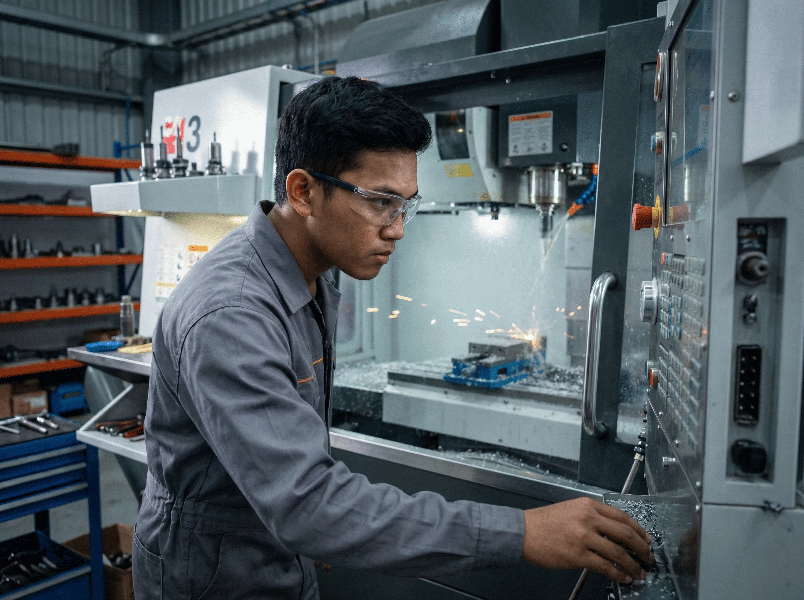
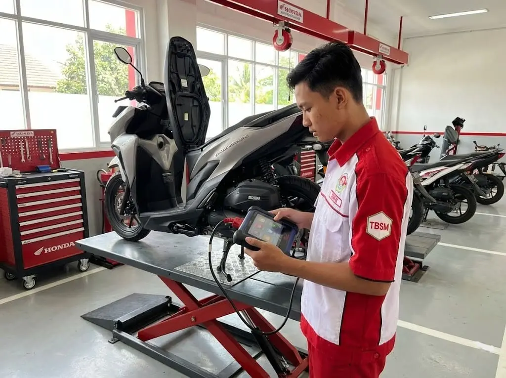
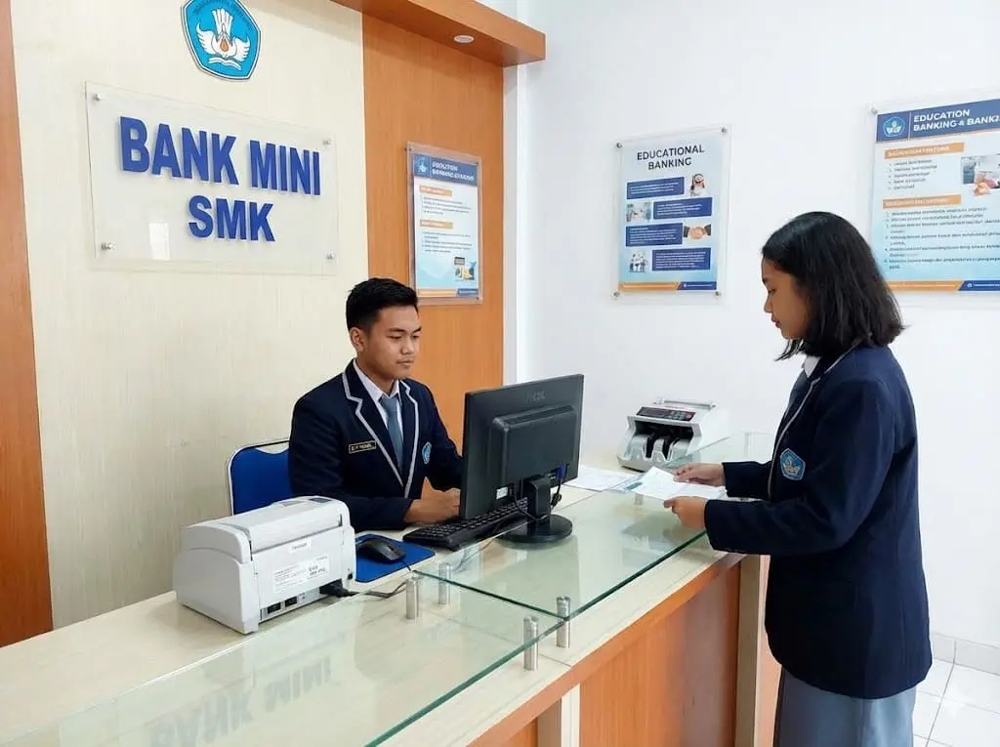
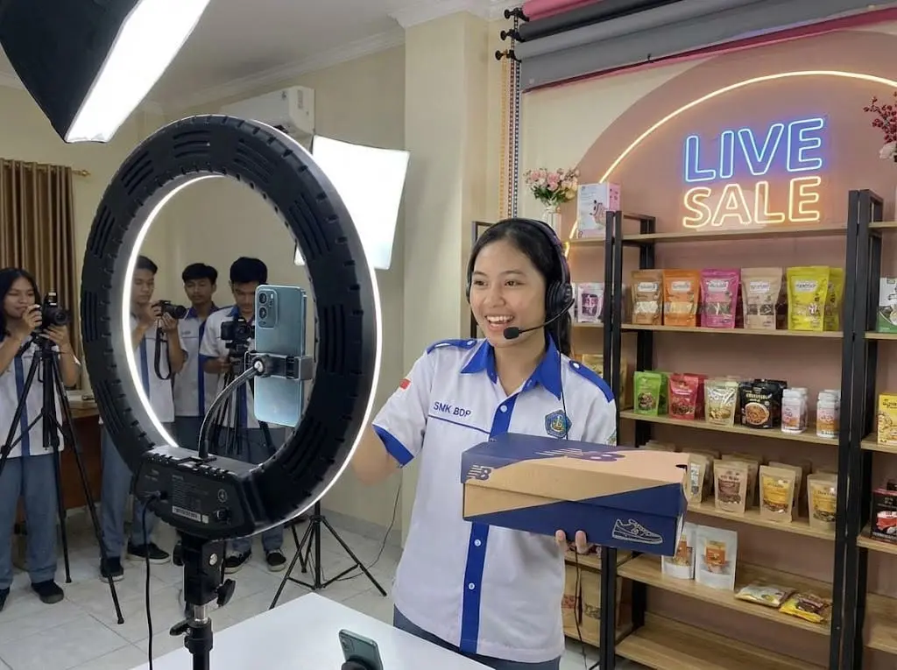
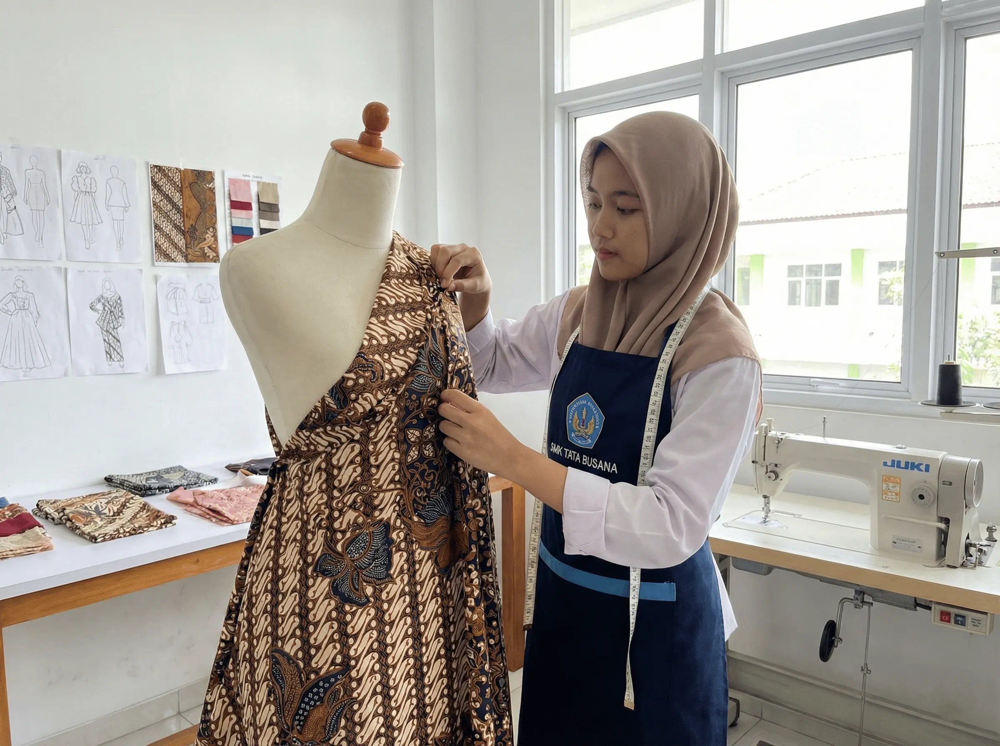

Daftar Jurusan
Teknologi
Rekayasa Perangkat Lunak
Coding, Web Design, Android Apps.
Seni
Desain Komunikasi Visual
Desain Grafis, Fotografi, Videografi.
Teknologi
Teknik Komputer Jaringan
Jaringan, Server, Fiber Optic.
 Agribisnis
Agribisnis
Agribisnis Pengolahan
Teknologi Pangan, Quality Control.

Teknik
Teknik Pemesinan
CNC, Bubut, Milling Manual.
Teknik
Teknik Kendaraan Ringan
Mekanik Mobil, EFI, Kelistrikan.

Teknik
Teknik Bisnis Sepeda Motor
Service Motor, Injeksi, Manajemen Bengkel.
Bisnis
Otomatisasi Tata Kelola Perkantoran
Administrasi, Kearsipan, Public Relation.

Bisnis
Akuntansi & Keuangan Lembaga
Pembukuan, Pajak, MYOB, Perbankan.

Bisnis
Bisnis Daring & Pemasaran
Digital Marketing, E-Commerce, Retail.

Seni
Tata Busana (Fashion Design)
Desain Mode, Pola, Menjahit, Fashion Show.
Pariwisata
Perhotelan
Front Office, Housekeeping, F&B Service.